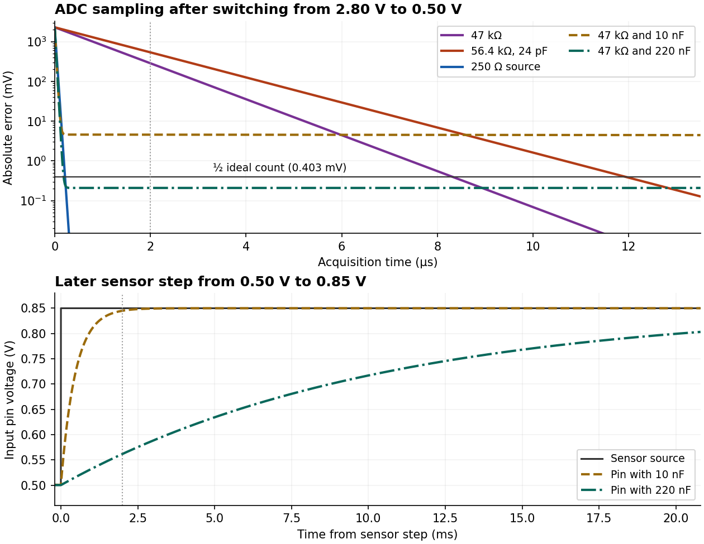

Measure ADC acquisition error after a channel change
The input voltage is 0.50 V. Depending on which channel came first, a short acquisition can leave the sampling capacitor at 0.786 V or 0.450 V. Trace the remaining charge and qualify a correction against two different timing limits.

Photo by Zeroping, scaled. Original photograph · CC BY 4.0.

Watch. Compare the proposed input network with measured ADC performance. Look for the effect of settling after the sample switch closes. Texas Instruments · Hands-on amplifier settling and charge bucket filter design.
Set both exercise requirements
The training ADC has a 3.3 V range, 12 bits, a 20 pF sample capacitor and a 1 kΩ closed sampling switch. Use half an ideal count, 3.3 ÷ (2 × 4096) ≈ 0.403 mV, as the acquisition-only error limit. The previous channel could leave 2.80 V or 0.10 V on that capacitor. The selected sensor is initially 0.50 V through a source resistance of 47 kΩ.
Later the sensor changes from 0.50 V to 0.85 V. The voltage at the ADC input pin must come within 10 mV of that new target in 2 ms. Measure the acquisition error at the sampling capacitor and the slower sensor tracking error at the pin. The circuit includes a switch and capacitor model. Real converters also add reference, offset, gain, input leakage and other errors. TI · SAR acquisition time and input settling.
Run the transient
Download the ADC acquisition model and run it with ngspice in a writable folder. The switch closes near t = 10 µs. Read at t = 12, 20 and 23 µs for effective acquisitions of roughly 2, 10 and 13 µs. The simulation keeps the switch closed across the measurement points so you can compare multiple possible end times in one trace.
ngspice -b adc-acquisition.cirThe output includes a short transient and a separate longer run for the sensor step. It writes adc-acquisition.dat and adc-step-tracking.dat. Compare the reported voltages with the ngspice 42 measurements.

Use the history and source impedance
| Acquisition case | Holding voltage | Signed error from 0.50 V | 0.403 mV limit |
|---|---|---|---|
| 47 kΩ, previous 2.80 V, 2 µs | 0.786075 V | +286.075 mV | Miss |
| 47 kΩ, previous 0.10 V, 2 µs | 0.450248 V | −49.752 mV | Miss |
| 47 kΩ, previous 2.80 V, 10 µs | 0.500069 V | +0.069 mV | Pass at nominal values |
| 56.4 kΩ and 24 pF, 10 µs | 0.501617 V | +1.617 mV | Miss at the modeling corner |
| 56.4 kΩ and 24 pF, 13 µs | 0.500183 V | +0.183 mV | Pass at the modeling corner |
| 250 Ω source, 2 µs | 0.500000 V as printed | Below output resolution at this precision | Pass in the simplified model |
Check the prediction for the high-impedance source. The effective resistance is 47 kΩ + 1 kΩ, so 20 pF gives a time constant of 0.96 µs. After a 2.30 V change the error magnitude is roughly 2.30 × exp(−2/0.96) = 0.286 V at 2 µs. In the model corner the time constant increases to about 1.38 µs. Use the 12-bit threshold to calculate when the corner should pass and compare with your run.
Compare charge sharing with sensor bandwidth
With a pin capacitor already at 0.50 V, connecting the higher-voltage sample capacitor initially shares charge. A simple estimate of the change is 2.30 V × Chold ÷ (Cpin + Chold) when the two capacitors equalize faster than the pin recharges through 47 kΩ. Ten nanofarads limits the short acquisition error to 4.572 mV in the simulation. It still misses the 0.403 mV limit. The 220 nF case passes at 0.209 mV.
Now check the later 0.35 V sensor step. With 10 nF the pin reaches 0.845 V after 2 ms, within the 10 mV requirement. With 220 nF it reaches 0.562 V, still about 288 mV low. Its 47 kΩ × 220 nF time constant is 10.34 ms. A longer acquisition or a suitable low-impedance buffer gives a different tradeoff. Check the buffer’s actual settling, capacitive-load stability, noise and output range using the target converter and sensor.
Why would a DMM on a steady 0.50 V node miss this error?
The stored voltage builds only while the sample switch is closed. A slow average on the source cannot show whether the capacitor has settled at the actual end of acquisition. Check raw ADC readings after different preceding channels and record the acquisition configuration.
Save the before-and-after traces, the input impedances, the sample times and results for both requirements. For bench verification, use two known extra-low-voltage inputs within the converter range. Reverse the channel order and compare first-sample error, repeat readings and longer acquisitions using the actual device specifications.
Practice P51 · Separately qualify sensor calibration and drift